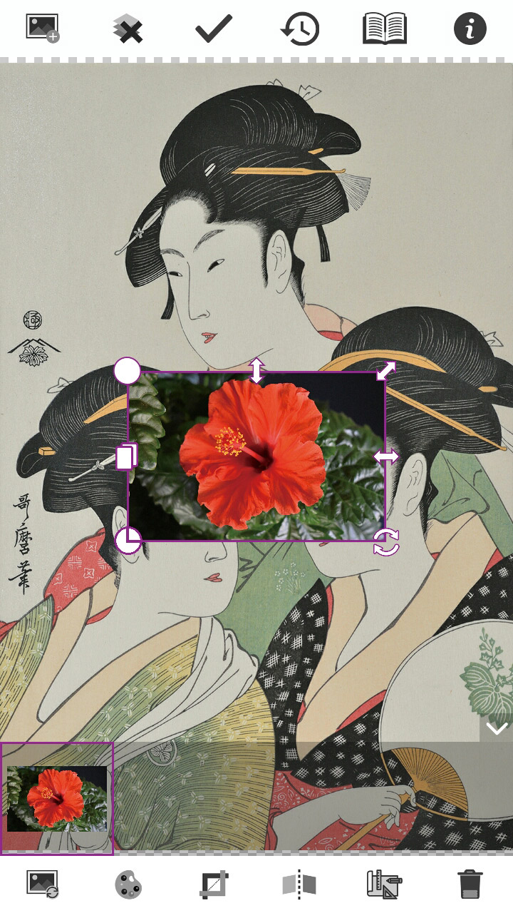

写真の選択方法
ホーム画面から をタッチします。
カメラまたはギャラリーから写真を選択します。
選択した後、カット画面で写真を切り取ったり写真の比率を設定することができます。
調整が終ったらをタッチします。

最初(1枚目)の写真は背景になります。
2枚目以降の写真は背景に載せるレイヤーになります。

ホーム画面から をタッチします。
カメラまたはギャラリーから写真を選択します。
選択した後、カット画面で写真を切り取ったり写真の比率を設定することができます。
調整が終ったらをタッチします。
最初(1枚目)の写真は背景になります。
2枚目以降の写真は背景に載せるレイヤーになります。
レイヤーが複数追加されると、画面の下にあるパネルにサムネイルが並びます。サムネイルをタッチするとレイヤーが選択されます。後から追加したレイヤーが上に載ります。
サムネイルをしばらく押し続けると重なりの順番を変えることができます。
選択されたレイヤーにある各ボタンでレイヤーのサイズ変更、移動、回転することができます。スワイプ、ピンチイン、ピンチアウトも利用できます。
ボタンを押すと選択されているレイヤーと同じレイヤーが作成されます。
ボタンを押すと選択されているレイヤー編集パネルが表示されます。
レイヤーを選択してから を押すと、レイヤー編集画面に移動します。
レイヤー編集画面はレイヤーの背景を消すために使います。 編集が終った後に を押すと合成画面に戻ります。
は自動的に背景を削除します。
は半自動で背景を削除します。
タッチペンまたは指で消したい所にタッチするとタッチされていたところの周辺と近い色の部分を削除します。
画面の下にあるスライダーで近似色判定範囲を調整できます。
と
で指とタッチペンのモードを切り替えて操作しやすいように調整できます。
は消しゴムで写真を消すツールです。
タッチペンまたは指で画面にある不要な部分を直接に消すことができます。
画面の下にあるスライダーで消しゴムのサイズを調整できます。
と
で指とタッチペンのモードを切り替えて操作しやすいように調整できます。

合成画面で下のツールバーにある を押すと、レイヤーが反転されます。
合成画面で下のツールバーにある を押すとクロップ画面に移動して選択された写真を切ったり形を変換したり比率を切り替えたりすることができます。
レイヤー編集画面はレイヤーの背景を消すために使います。 編集が終った後に を押すと合成画面に戻ります。
合成画面で をタッチすると確認ダイアログが表示されます。
「はい」ボタンを押すと全てのレイヤーと背景が合成して1枚の写真になり、塗り絵画面に移動します。 塗り絵画面の で合成画面に戻ることができます。
塗り絵画面の を押すと塗り絵の各タイプのパネルが表示されます。
パネルにあるサムネールを選択すると、色々なタイプの塗り絵に変換することができます。
を押すと最初の状態に戻ります。
塗り絵画面の を押すと画像に効果を与えるための各タイプのパネルが表示されます。
この機能はデバイスがインターネットに接続されている必要があります。
パネルにあるサムネールを選択すると、画像に芸術的な効果をかけることができます。
を押すと最初の状態に戻ります。
効果パネルが表示されている間、画面を横方向にスワイプすることにより効果レベルを調整することができます。
塗り絵画面の を押すと落款印の各タイプのパネルが表示されます。
パネルにあるサムネールを選択すると、名称入力のダイアログが表示されます。
入力してから「次へ」ボタンを押すと画面の中心に落款印が追加されます。
落款印にはレイヤーと同じような各種ボタンが付いています。 それらのボタンで印鑑の位置、縦のサイズ、角度、テキストなどを変更することができます。 画面の下にあるスライダーで落款印全体のサイズを調整することができます。
調整が終ったらスライドバーの右側にある完了ボタンを押します。
塗り絵画面で を押すと保存ダイアログが表示されます。
ファイル名を入力してファイル形式を選んで「保存」を押すと写真が保存され、履歴に表示されるようになります。
塗り絵画面で を押すと端末にインストールされているソーシャル・アプリの一覧パネルが表示されます。
プリンターを設定していない場合は、まずプリンターを設定します。
設定画面で「印刷」を押すと印刷設定画面に移動します。
「サービスを追記」を押します。
Googleアカウントで既にサインインしている場合はすぐにサービス一覧画面が表示されます。
サインインしていない場合はサインインしします。
お手元のプリンターのメーカ名で適切なサービスをインストールします。
印刷サービスをインストールしたらアプリの塗り絵画面のを押します。
印刷画面でインストールしたプリンターを選択して印刷プロパティを設定して印刷ボタンを押します。
合成画面で上のツールバーにある
を押すと以前に保存された写真の一覧画面に移動します。
この画面で履歴を削除したりプリントしたり共有したりすることができます。